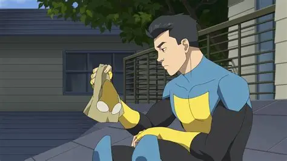
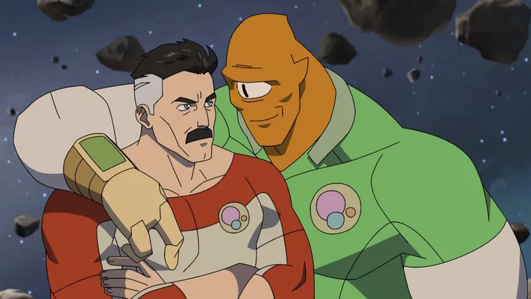
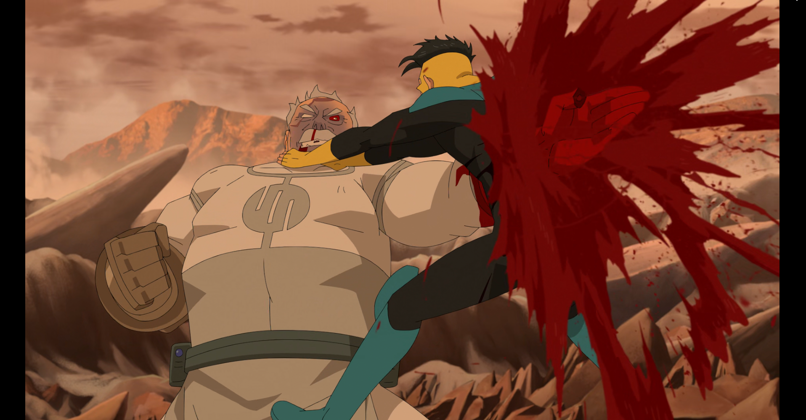
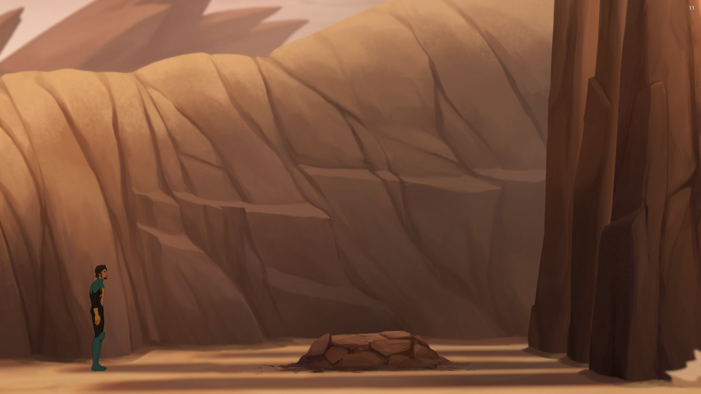
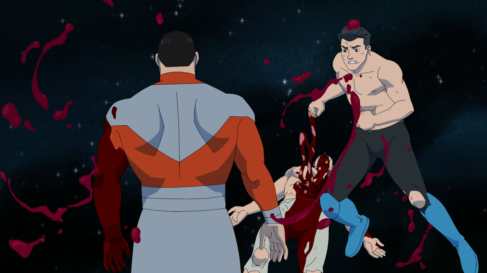
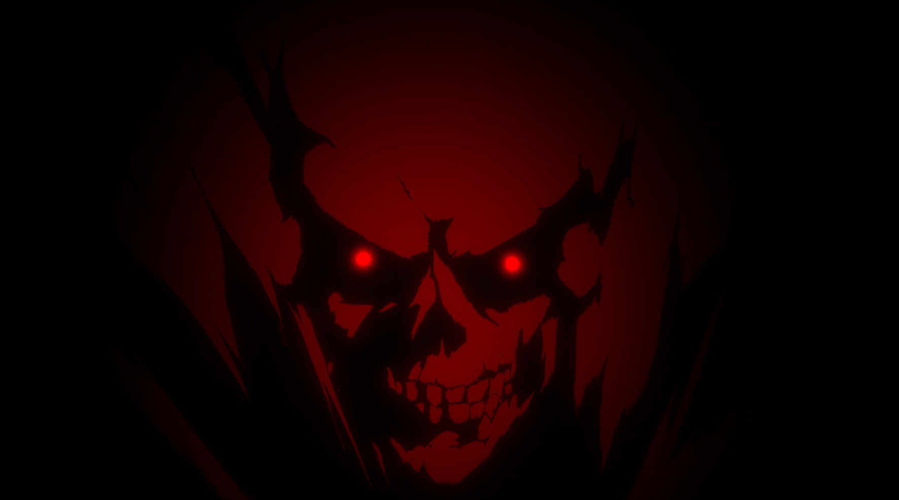
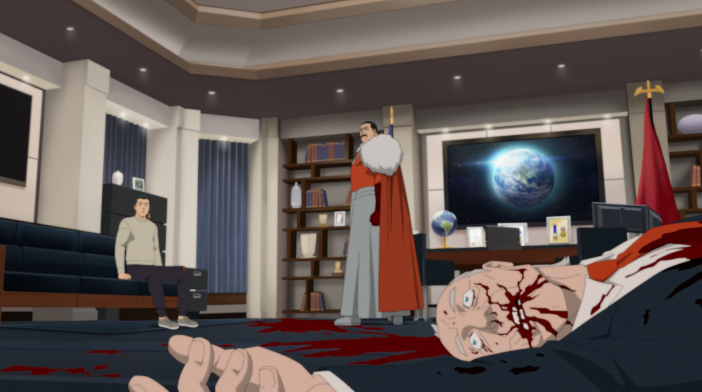
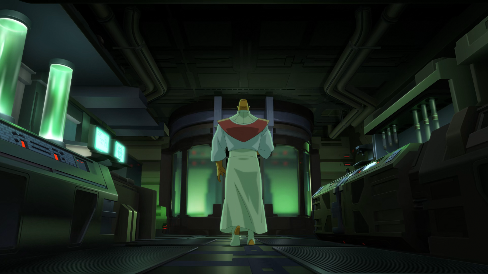
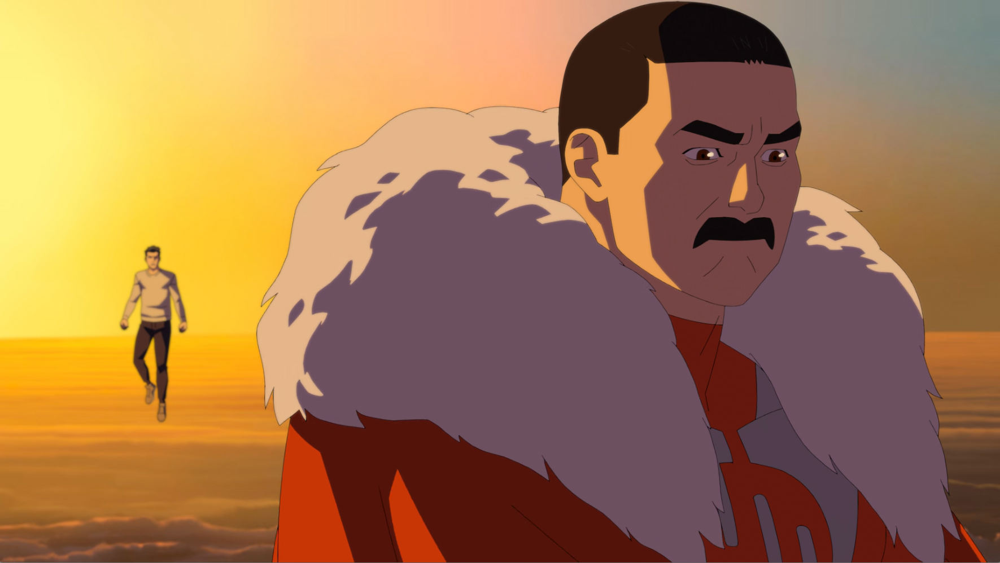

Note : 3/5
Une saison qui n'a pas peur de faire mal. Conquest en état de grâce, Thragg qui s'installe, et Mark à bout de souffle, épisode après épisode, la pression monte et ne redescend plus.⚠️ Attention : cette critique contient des spoilers majeurs sur la série Invincible
Introduction – Une saison qui tient ses promesses à moitié
Invincible revient avec une quatrième saison ambitieuse, portée par des enjeux narratifs forts, une galerie de personnages qui s'étoffe, et un antagoniste principal qui impose immédiatement son autorité. La promesse est là. L'exécution, elle, est inégale, et ce déséquilibre entre la qualité de l'écriture et la médiocrité récurrente de l'animation finit par devenir le vrai sujet de la saison.
Ce qui est certain, c'est que cette saison prend des risques. Des personnages se retrouvent dans des situations irréversibles, les conséquences s'accumulent sans être effacées par un deus ex machina commode, et la violence n'est jamais purement spectaculaire, elle pèse, elle marque, elle transforme. C'est le meilleur d'Invincible. C'est aussi ce qui rend ses faiblesses d'autant plus frustrantes.
Un point de départ solide, des failles dès le début
La saison reprend bien là où la trois s'était arrêtée : les conséquences des Invincible du multivers, les dégâts laissés par Conquest sur la planète, et un Mark Grayson clairement à bout. Ce fil conducteur est bien posé dès le premier épisode, la fatigue de sauver des gens qui ne t'aiment pas pour autant, c'est un état d'esprit qui donne de la texture au personnage et qui sera le moteur émotionnel de la saison.
Mais dès le départ, des choix scénaristiques irritent. Conquest, l'un des antagonistes les mieux construits de la série, s'échappe de la base de Cecil sans friction, sans conséquence, sans que personne n'intervienne réellement. C'est du gâchis pur. Un méchant de ce calibre méritait soit une mort à la hauteur, soit d'être utilisé comme source d'information sur les Viltrumites. Ni l'un ni l'autre, il disparaît dans un trou scénaristique, et Cecil, censé gérer la sécurité planétaire, laisse ça arriver dans sa propre base. Ce n'est pas très cohérent.

Le petit frère de Mark est une bonne introduction, à condition que la série évite le cliché de l'ado incontrôlable qui fait sa loi. On a eu ça en saison 3, c'était usant, on espère que l'écriture s'en souvient.
Le milieu de saison : entre exposition creuse et vraies trouvailles
Les épisodes 2 et 3 sont les plus inégaux de la saison. Revoir Nolan et Allen est toujours plaisant, Allen reste une valeur sûre, mais l'épisode 2 tourne en rond. La gag sur la femme d'Allen est drôle une, deux, peut-être trois fois, pas au-delà. La révélation du poison qui aurait décimé 90% des Viltrumites et du "traître" qui en est responsable est évidente et racontée sans tension. Ce genre d'info aurait dû créer quelque chose, pas juste remplir du temps d'écran. Ce qui sauve l'épisode, c'est Conquest qui retourne voir Thragg, là, pour la première fois, un vrai enjeu se dessine.
L'épisode 3 revient sur la même question qui a occupé les trois saisons précédentes : est-ce que Mark va partir en vrille comme son père ? La question était pertinente en saison 1. En saison 4, sans angle neuf, c'est du remplissage. Les Gardiens de la Terre débattent sur la légitimité de tuer un innocent pour sauver une ville, c'est bien sur le papier, mais le débat a théoriquement déjà été tranché. La formation d'une bande de vilains à la Sinister Six ne hype pas davantage. Rex et sa copine coincés sur une autre planète, Rex figé devant un portail qui se referme sans rien tenter, c'est des intrigues données de force pour combler quelque chose, et ça se sent.
Ce qui sauve l'épisode 3, c'est Eve. Ses pouvoirs qui lui échappent, manipulation atomique hors contrôle, probablement séquelle de son power-up contre Conquest, ouvrent quelque chose de neuf. Et la révélation finale sur sa grossesse referme bien l'épisode : si sa biologie change à cause du bébé, ça justifie le dérèglement. C'est solide, et c'est précisément le genre de détail qui montre que la série sait écrire quand elle s'en donne la peine.
L'épisode 4 : le tournant
L'épisode 4 est vraiment bon, c'est clairement un épisode Filler mais ça reste bon. L'enfer est bien exploité, la direction artistique s'y prête, la bande-son accompagne ça avec une efficacité surprenante. Ce n'est pas un univers évident à intégrer dans Invincible, et pourtant ça fonctionne. La seule fausse note, c'est le personnage qui ressemble à une version discount de Ghost Rider, sans tension ni identité propre. Dans un épisode qui tient par ailleurs très bien la route, ça détonne.
Mais le moment fort, c'est Mark qui reprend son ancien costume. C'est exactement ce qu'on veut d'un héros bien écrit : le doute, la remise en question, et malgré tout le choix de continuer. Pas par certitude, mais par conviction. Ce geste dit plus que trois dialogues explicatifs. C'est de l'écriture efficace, sobre, et c'est ce qui manque ailleurs dans la saison.

La fin d'épisode est posée avec économie : Eve qui cherche le bon moment pour parler de sa grossesse, et Nolan qui débarque avec Allen avec un plan qui transpire l'aura. C'est exactement le genre de cliffhanger qui donne envie de continuer.
Épisodes 5 et 6 : le cœur émotionnel de la saison
L'épisode 5 est le plus émotionnel de la saison, et l'un des plus réussis. Nolan qui retrouve enfin sa famille, sa femme, Oliver, Mark, c'est touchant et bien amené. On ne te dit pas quoi ressentir. Nolan a fait des choses impardonnables, et pourtant quelque chose d'irréductible subsiste dans ces liens familiaux abîmés. La scène entre la mère de Mark et Nolan est la plus forte de l'épisode : elle l'aime encore, mais elle ne peut plus l'aimer, pas à cause de ce qu'il est, mais à cause de ce qu'il a fait. C'est une distinction subtile et dévastatrice à regarder.
Oliver est une belle surprise dans cet épisode. Très mature, ancré dans la réalité, capable de penser à aider une planète plutôt qu'à revoir son père. C'est incroyable pour son âge, et c'est bien amené. Cecil en revanche est complètement perdu, observer Nolan pendant 24h sur un écran et s'auto-féliciter d'avoir passé une bonne journée, c'est soit une blague sur le personnage, soit une blague sur l'écriture. Dans les deux cas, c'est un problème.
Et puis il y a Conquest. J'avais peur qu'il soit mal exploité, j'avais tort, et de loin. Le semi-combat avec Oliver est magique dans sa cruauté froide. La scène qui suit, Oliver qui atterrit sur une planète pour reprendre son souffle, et Conquest qui se tient là derrière lui, immobile, prêt à le tuer, c'est du cinéma pur. Une image iconique qui n'a besoin d'aucun mot. Le combat avec Mark qui s'enchaîne est dans la même veine : Mark qui lutte littéralement pour étrangler Conquest jusqu'au bout, Conquest qui le transperce en réponse, qui lui arrache les entrailles. C'est sauvage, viscéral, un combat de bêtes. Et tout ça dans un silence si bruyant. C'est le meilleur de ce que la série sait faire.

L'épisode 6 gère bien les retombées. Mark dans le coma pendant deux mois, la guerre entre la Coalition et les Viltrumites qui continue sans lui, c'est un choix courageux, et ça fonctionne. La tension est bien dosée, la stratégie de guerre est amenée clairement sans être simpliste, et les musiques épousent l'importance de chaque scène sans forcer. Oliver et Nolan qui se découvrent enfin, partagent des moments ensemble, c'était bien, ni trop appuyé, ni expédié.
Le moment le plus juste de l'épisode : Mark qui va sur la tombe de Conquest en croyant que c'est lui qui a tué Oliver et Nolan, et qui apprend que c'est lui qui l'a tué. La réaction est parfaite, un soulagement qui n'est pas une victoire, une fatigue qui transparaît sur tout son visage, et la conscience que ça ne fait que commencer. Ce moment dit tout sur où en est Mark.

Thragg est bien introduit dans cet épisode. Il ne surjoue pas la menace, il réfléchit, il planifie, il agit avec une économie de gestes qui le rend immédiatement crédible. C'est une promesse pour l'instant, mais une promesse qui sera tenue.
Épisodes 7 et 8 : Thragg prend tout
L'épisode 7 est très bon. L'histoire sur Viltrum et les Viltrumites est excellente, bien racontée, les contradictions internes de cette civilisation exposées avec une clarté qui ne sacrifie pas la complexité. On comprend les oppositions sans avoir besoin d'un cours magistral. C'est de l'écriture efficace.
Et Thragg n'a plus rien à prouver. Un coup pour mettre Oliver à terre, c'est déjà une déclaration. Il rattrape ensuite tout le monde en vitesse, transperce Nolan, tient un 1v2 contre Mark et Nolan sans sourciller, et élimine Thaidus comme une formalité. Pas de monologue, pas de théâtralité, juste une démonstration factuelle de supériorité absolue. C'est exactement ce qu'on attendait d'un antagoniste de ce calibre.

L'impact frame entre Mark et Thragg est magnifique. L'image du démon qui transparaît derrière Thragg dans ce contexte de guerre, c'est une décision artistique forte, symboliquement juste, et elle s'inscrit dans la logique de l'épisode sans forcer.

L'épisode 8 est particulièrement chill, mais anxieux en même temps, et c'est voulu. Mark a des visions de terreur sur Thragg, et c'est plaisant de voir les conséquences psychologiques s'installer. Il demande à Cecil de le mettre en contact avec un psychologue, il est rongé de l'intérieur. Entre Conquest et Thragg, c'est un miracle qu'il soit encore debout. Et c'est tellement bien trouvé : montrer qu'un super-héros a un mental, qu'il n'est pas juste une machine à sauver des gens qui encaisse tout sans broncher. Invincible de nom, pas d'esprit.

Le mouvement stratégique de Thragg est brillant : proposer un traité de paix avec la Terre pour la coloniser et s'en servir de berceau pour reconstruire son peuple. Si Mark refuse, c'est l'extinction de deux espèces. Ce n'est pas refusable. C'est de la stratégie pure, et ça fait du bien de voir un antagoniste penser à cette échelle plutôt que de juste cogner plus fort.
Allen qui prend les responsabilités de Thaidus et devient une sorte de chef de l'univers ouvre quelque chose d'intéressant. Le jour où il apprend que les Viltrumites se repeuplent sur Terre, il devra attaquer la Terre, et donc se mettre en conflit direct avec Mark. C'est une tension potentielle forte, et j'espère que la série saura l'exploiter.

Sur la décision d'Eve d'avorter : c'est son choix, et l'épisode le traite sans être didactique, ce qui est bien. Mais sur le plan narratif, c'est une opportunité ratée. Un enfant Viltrumite grandissant sur Terre dans ce contexte de reconstruction du peuple, Thragg aurait pu s'en servir pour mettre Mark dans une position intenable. L'intrigue avait une vraie densité potentielle, elle est résolue rapidement.
Le problème qui ne change pas : l'animation
Il faut être honnête là-dessus, parce que c'est le seul vrai problème structurel de cette saison, et il est constant. L'animation d'Invincible a toujours été inégale, mais en saison 4 le décalage entre l'ambition narrative et l'exécution visuelle est devenu impossible à ignorer.
Les plans fixes là où il faudrait de la fluidité. Les vêtements brûlés de Mark rendus en statique. Les visions de Thragg floues et peu lisibles là où elles auraient dû être oppressantes. Les combats dont certains moments sont clairement mal animés alors que d'autres, le combat contre Conquest sur la planète, l'impact frame avec Thragg, sont magnifiques. Ce n'est pas une question de budget, c'est une question de répartition des efforts et de priorités.

Le résultat, c'est qu'à plusieurs reprises dans la saison, des scènes qui avaient toutes les cartes pour être légendaires restent juste bonnes. Ce n'est pas suffisant pour une série qui se targue d'être l'une des animations adultes les plus ambitieuses du moment. L'histoire est là, les personnages sont là, l'écriture tient la route, l'animation ne suit pas, et ça finit par peser.
Si la saison 5 arrive avec le même niveau d'animation, la série va finir par se saborder elle-même. L'histoire n'a rien à changer, elle est clairement au niveau. C'est l'animation qu'il faut changer, et ça ne peut pas attendre.
Verdict
Invincible Saison 4 est une bonne saison, pas une grande saison. Elle a les ingrédients d'une grande saison, un antagoniste crédible et terrifiant, des arcs émotionnels forts, des moments de bravoure narrative qui prennent de vrais risques. Mais elle traîne dans ses premiers épisodes, recycle des questions qu'elle avait censé régler, et son animation défaillante l'empêche d'atteindre les sommets qu'elle vise.
Thragg est une réussite totale. Conquest dans cet épisode 5 est probablement le meilleur moment de toute la série. Mark qui reprend son costume, la scène entre sa mère et Nolan, la tombe de Conquest, ce sont des scènes qui resteront. C'est assez pour donner envie de continuer. Mais pour que la suite soit à la hauteur de ce qu'elle promet, il va falloir revoir les fondations visuelles de la série. L'histoire mérite mieux que ce qu'elle reçoit à l'image.